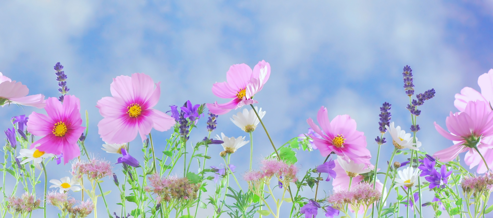

Our environment can play a very important role when it comes to our mood. Sometimes life gets hard and it becomes difficult to see the light in the darkness around us. To feel better, having a positive mindset is very necessary, but also the objects and beings that surround us are critical too.
Flowers and greenery can have a fundamental impact on our health, reducing stress and helping us find peace of mind. Multiple studies prove that flowers have a healing effect on those who receive them as a gift or who have them in their homes. People surrounded by flowers appear to be less agitated, anxious and depressed, and also they seem to have an increased life satisfaction overall.
Roses,the most classic and beloved flower of all times, surrounded by symbolism and mythology for centuries. The ancient Greeks and Romans identified the rose with the goddesses of love, Aphrodite and Venus respectively. In the Tarot, the rose is considered a symbol of balance. It expresses promise, new beginnings, and hope. Their beauty and elegance are so attractive that roses are considered a favourite flower for weddings, as a gift for a special someone, and as a symbol of true love and friendship.They can also help us eliminate stress. As a study in the Journal of Physiological Anthropology found, office workers who looked at roses felt more relaxed and comfortable in their work environment.